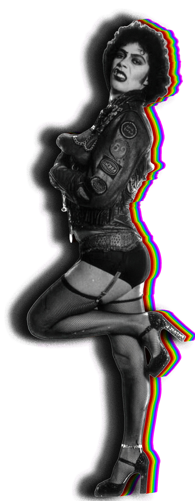
Don't Dream It,
be it.
Tim Curry
04/19/46 - 08/25/26
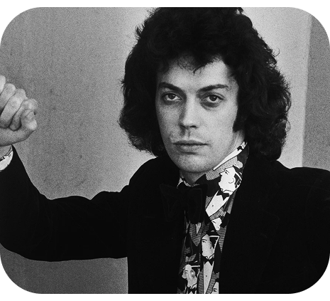
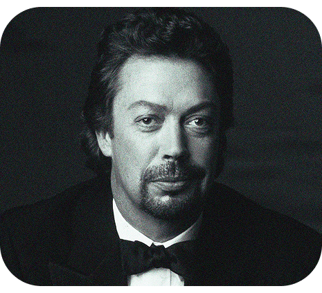
“And I can only hope that you will take away a sound belief that—if you’re searching for where you belong—you always have a home within yourself.”
bio.
"Timothy James Curry" was born on April 19, 1946, in Grappenhall, Cheshire. After graduating from the University of Birmingham with a Bachelor of Arts degree in English and drama, he grew into one of the world’s best-known performers. Throughout a career that spanned roughly 60 years, he took on many roles as an actor or singer and amassed more than a staggering 240 credits on screen. Although it wasn’t his first role, Curry was initially best known for his performance as Dr. Frank-N-Furter in the 1975 film adaptation of “The Rocky Horror Picture Show” . Over the years, he performed roles ranging from audiobooks and voiceover to Broadway and film.
If at any point in your life you’ve enjoyed the comfort of movies or theater, there is a high probability, you’ve felt the impact of Tim Curry at least once. How many of us can say something like that? Maybe 20 people know me, but the majority of the world knows at least something about Tim Curry. I can say with certainty that roles like Pennywise the Dancing Clown, from the TV mini series “It,” haunted my dreams as a child. However, my favorite movie of all time, which has brought me comfort on my worst days is, “Clue,” and all of that is because of the brilliant performance by Tim Curry as the character, Wadsworth. I’ve watched that film probably 200 times, and I still enjoy just as much as the first time.
Below is a timeline of some of Tim Curry’s best-known roles which highlights just a small portion of the amazing things he brought to life.
just the highlights.
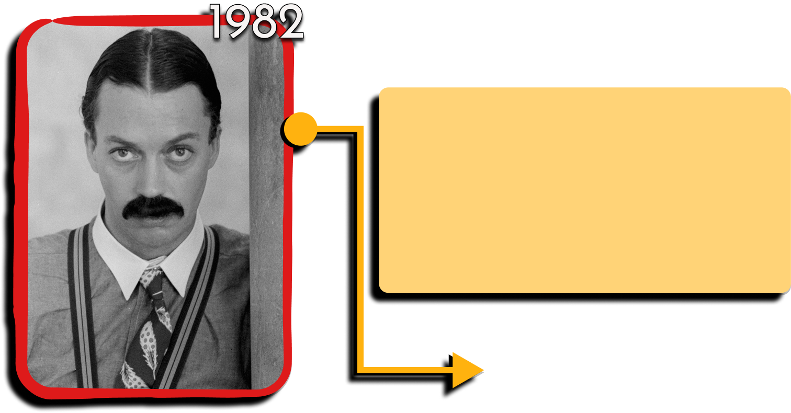
"I'll kill ya, ya little brat. I'll kill ya!"
Rooster Hannigan, Annie
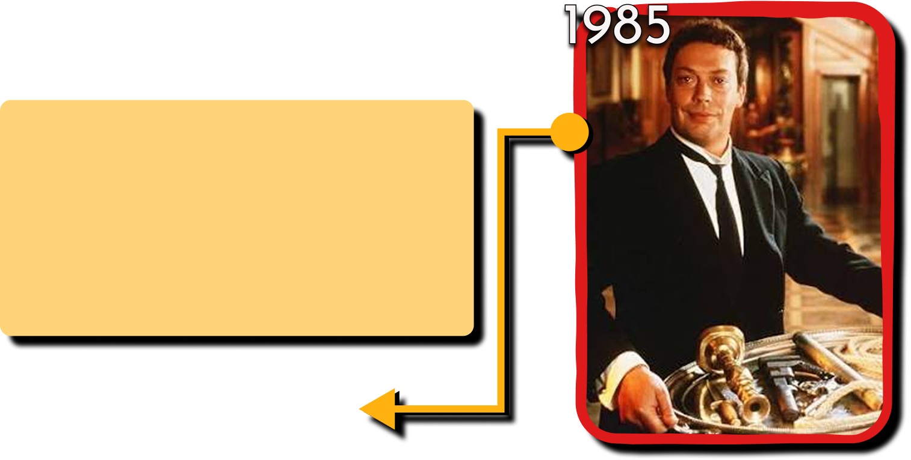
"Frankly Scarlet, I don't give a damn."
Wadsworth, Clue
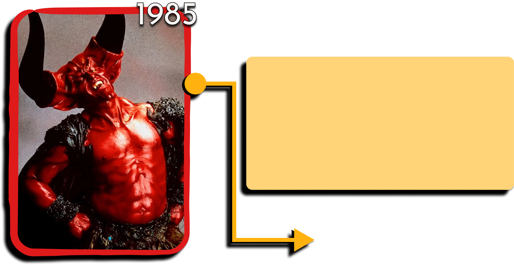
"We are all animals, my lady."
Darkness, Legend
"??????"
???, ???
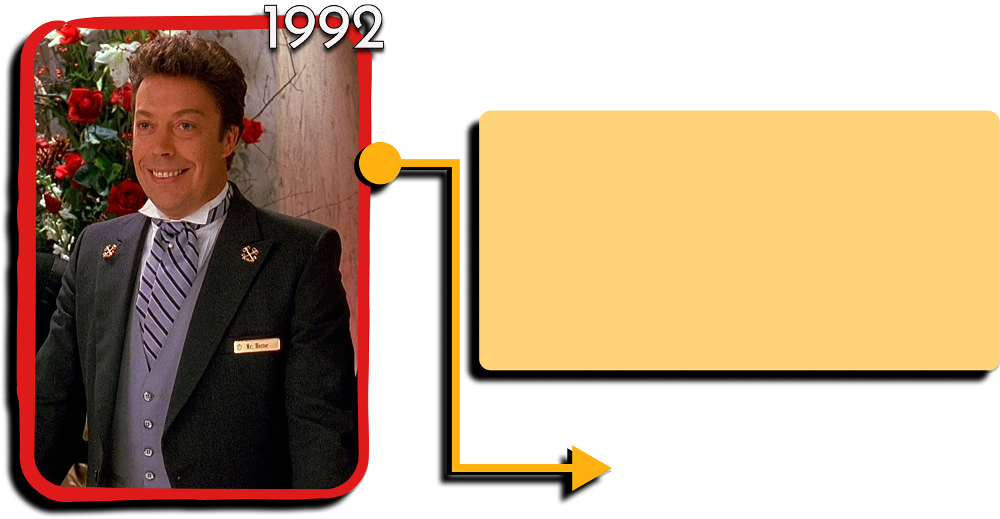
"Stay in your rooms! This is an emergency! There's an insane guest with a gun!"
Mr. Hector, Home Alone 2
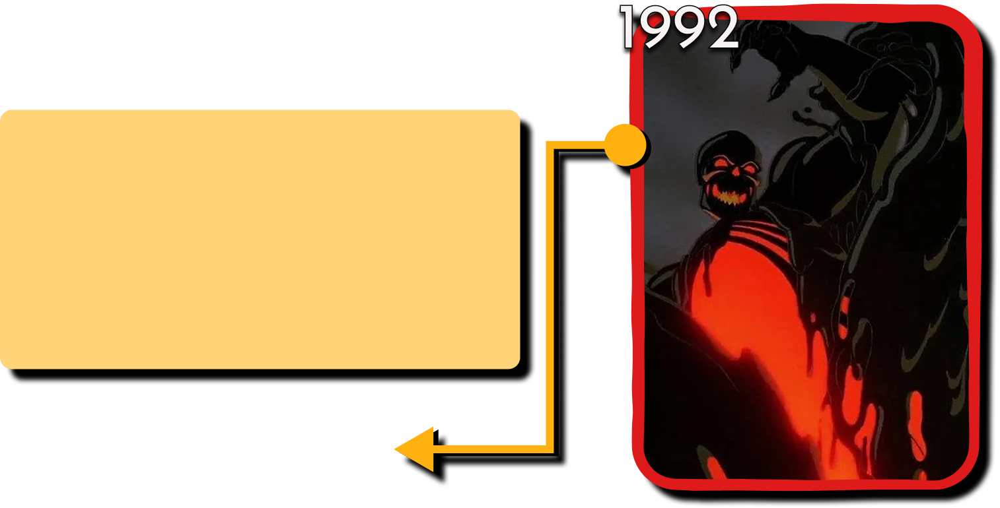
"I do believe we are destined to be soul mates."
Hexxus, FernGully: The Last Rainforest
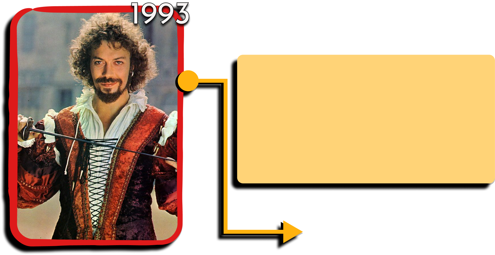
"Remember, Kings come and Kings go but one thing remains the same. And that is me."
Cardinal Richelieu, 3 Musketeers
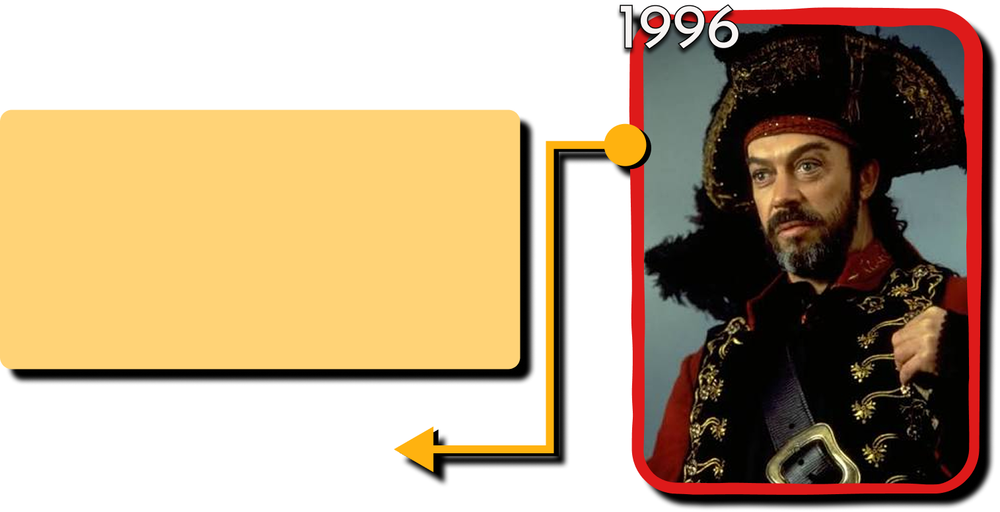
"When you're a professional pirate — you don't have to wear a suit."
Long John Silver, Muppet Treasure Island
"SMASHING!"
Nigel Thornberry, The Wild Thornberrys
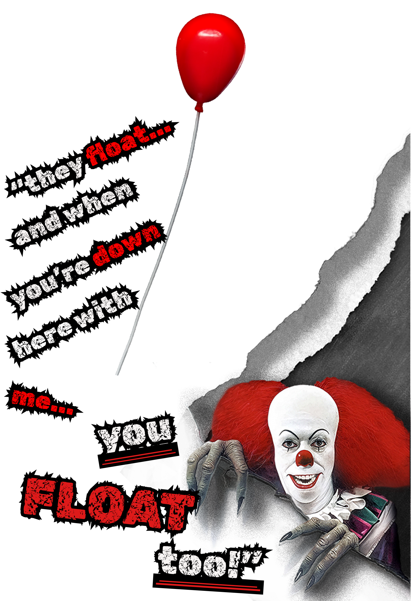
Tim, this page is my “thank you,” a small tribute to the amazing person you were and will continue to be. Even though you’re no longer with us, you always will be, and you’ll never be forgotten.